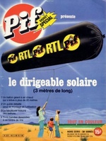

N° spécial, HS de Pif Gadget publié par les éditions Vaillant. Le gadget
est un "dirigeable solaire" : une grosse saucisse aux couleurs de Pif et de RTL.
Caractéristiques : 3 mètres de long, 70 cm de diamètre, réalisée en polyéthylène de 5 microns.

A Yvetot, Seine Maritime, 2 témoins devant leur habitation
aperçoivent un phénomène lumineux dans le ciel. Ils appellent aussitôt leurs voisines et la gendarmerie. Tous
constatent la présence à très basse altitude d'un objet circulaire de couleur claire, d'environ 30 ou 40 cm de
diamètre. Cet objet fixe sera observé durant puis les gendarmes feront la même observation dans une
autre commune. Aucune trace ne sera relevée sur le sol ou sur les habitations environnantes et aucun fait
particulier concernant l'attitude des animaux du secteur n'a été porté à la connaissance des gendarmes Une vérification avec un logiciel d'astronomie incite le GEPAN à penser que les témoins ont probablement fait une observation astronomique de la lune, particulièrement basse sur l'horizon en cette période de l'annéeGEPAN: PAN classé B.
A Cormeille-en-Parisis (Val d'Oise), pendant le feu d'artifice
de la fête nationale, observation d'un cône orange à 300 m du sol Gazette
du Val d'Oise, 16 juillet 1997.
Plusieurs témoins sur un bateau aperçoivent au-dessus de l'île de Port-Cros (Var) 1 phénomène volant plus gros qu'une étoile, de la forme d'une torche, et
blanc-vert. Durant l'observation qui a duré plusieurs s, le phénomène s'est déplacé lentement et sur une trajectoire
horizontale GEPAN: PAN classé C.
Dans 14 provinces du sud-ouest et nord-ouest de la Chine
près de 10 millions de personnes voient dans le ciel dégagé comme une étoile qui devient de plus en plus brillante,
et semble osciller. Puis une une sorte de bande nuageuse lumineuse se forme autour du point lumineux,
dessinant une spirale à une altitude de 650 km et une vitesse de 1,6 km/s avant de disparaître. Long Ruyi: FTD < Professor Wang Sichao, a planetary astronomer at the Purple Hills Observatory of the Chinese Academy of SciencesProbablement un tir de missile/fusée tournant dans le ciel
A Ploermel (Morbihan), 2 témoins aperçoivent dans le
ciel 2 points lumineux. Ils se déplacent parallèlement puis effectuent des changements de trajectoire avant de
revenir à leur point de départ. L'observation qui a duré environ a permis d'assister à plusieurs
allers et venues. Les phénomènes se dirigent soudain rapidement vers l'ouest pour disparaître. Aucun bruit n'a été
entendu lors de l'observation. Aucun autre témoignage n'a été recueilli GEPAN: PAN classé C.